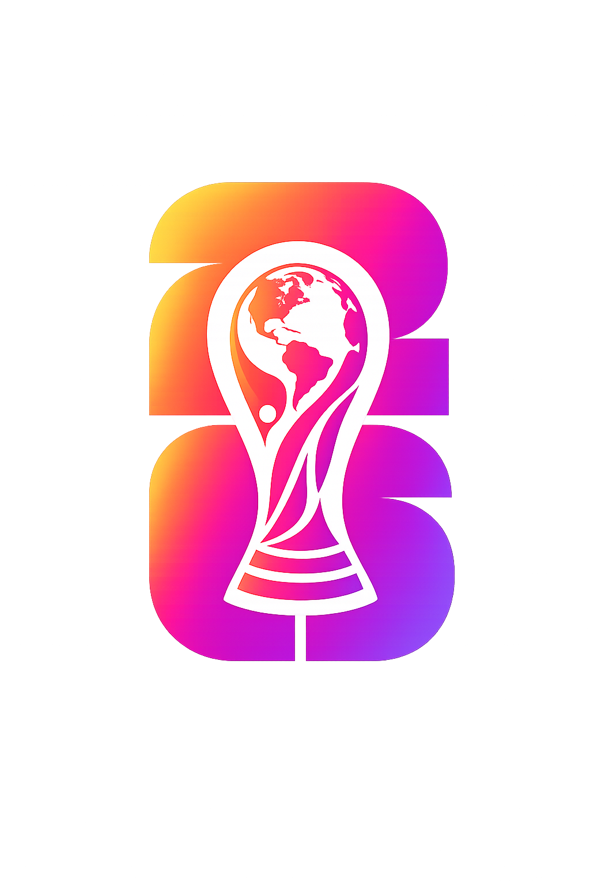

Guide Mondial 2026
Le compagnon ultime de la Coupe du Monde 2026
📰 Dernières actualités Coupe du Monde 2026
Analyses, programme TV, stades, favoris et guides pratiques pour suivre le Mondial.
⭐ Choisis tes équipes à suivre
Elles seront mises en avant dans Mon Mondial et via le filtre “Mes équipes”.
📺 Guide TV du Mondial
Vue simple des matchs diffusés en France. Le badge vert indique les matchs accessibles gratuitement sur M6/M6+.
🌍 Équipes du Mondial
Choisissez une sélection pour voir son calendrier, son groupe, ses stades et ses diffusions en France.
📊 Classements des groupes
Classements calculés automatiquement à partir des scores et statuts renseignés dans Supabase.
🏆 Phase finale de la phase finale
Suivez le tableau des matchs à élimination directe. Les équipes qualifiées apparaîtront au fur et à mesure des résultats.
🧠 Quiz du jour
Une petite touche ludique pour donner envie de revenir.
🔥 Pronostic rapide
Votes globaux des visiteurs : un vote par match et par appareil, synchronisé avec Supabase.
📊 Ambiance du jour
Un résumé rapide de l'activité du jour : matchs, TV gratuite, pronostics et quiz.
📣 Partager le guide
Un accès rapide au calendrier, aux chaînes TV françaises, aux stades et aux favoris.
📣 Partager le guide
Un accès rapide au calendrier, aux chaînes TV françaises, aux stades et aux favoris.
🏟️ Les stades du Mondial
Photos de stades, capacités, pays hôte et nombre de matchs intégrés dans cette version.
🌎 Carte des villes hôtes
Survole une ville pour voir son stade, clique pour ouvrir directement la fiche du stade.